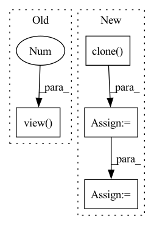

Pattern ID :27094
Before Change
if p.size(1) > 1:
raise ValueError("Not Supported shape for propbabilty.")
p_out = torch.zeros_like(p).view( p.size(0), p.size(1), -1 )
feat_out = features.clone().view(features.size(0), features.size(1), -1)
with mp.Pool(processes=self.num_workers) as pool:
// p to listAfter Change
if p.size(1) > 1:
raise ValueError("Not Supported shape for propbabilty.")
p = p.cpu().clone()
features = features.cpu().clone()
with mp.Pool(processes=self.num_workers) as pool:
// p to list
p_list = torch.unbind(p.cpu(), 0)
// f to list
feat_list = torch.unbind(features.cpu(), 0)
// itertools map p and f
args = iter.zip_longest(p_list, feat_list, [self.match_dims], [self.clusterer], [self.p_aggregation])
results = pool.starmap(self._cluster_single_frame, args)
p_out_ = []
feat_out_ = []In pattern: SUPERPATTERN
Frequency: 3
Non-data size: 4
Instances Fragment ID: 80612431
Project Name: turagalab/decode
Commit Name: 3e0527d653311f3ada19b5f6988fc65e8a30cd37
Time: 2019-09-06
Author: gitdev@LRM.PHOTO
File Name: deepsmlm/neuralfitter/post_processing.py
M Class Name: ConsistencyPostprocessing
N Class Name: ConsistencyPostprocessing
M Method Name: _cluster_mp(3)
N Method Name: _cluster_mp(3)
M Parent Class: PostProcessing
N Parent Class: PostProcessing
M File Name: deepsmlm/neuralfitter/post_processing.py
N File Name: deepsmlm/neuralfitter/post_processing.py
M Start Line: 448
M End Line: 462
N Start Line: 467
N End Line: 490
Before Change
//tgt_in = torch.clone(tgt)
//tgt_in[tgt_in==self.pad_id] = self.eos_id
//tgt_in = tgt_in.view(btz,-1)[:, :-1]
tgt_in = tgt[tgt!=self.eos_id].view( btz,-1 )
tgt_out = tgt[tgt!=self.sos_id].view(btz,-1)
return tgt_in, tgt_outAfter Change
def make_in_out(self, tgt):
btz = tgt.size(0)
tgt_in = torch.clone( tgt)
tgt_in[tgt_in==self.pad_id] = self.eos_id
tgt_in = tgt_in.view(btz,-1)[:, :-1]
//tgt_in = tgt[tgt!=self.eos_id].view(btz,-1)
tgt_out = tgt[tgt!=self.sos_id].view(btz,-1)
Fragment ID: 80612428
Project Name: qute012/kosr
Commit Name: e19438c9d4d6bd6af0fa84e9fd93a20e2cf2f828
Time: 2021-02-03
Author: ejrwls012@gmail.com
File Name: kosr/model/transformer/model.py
M Class Name: Transformer
N Class Name: Transformer
M Method Name: make_in_out(2)
N Method Name: make_in_out(2)
M Parent Class: nn.Module
N Parent Class: nn.Module
M File Name: kosr/model/transformer/model.py
N File Name: kosr/model/transformer/model.py
M Start Line: 137
M End Line: 142
N Start Line: 140
N End Line: 144
Before Change
//tgt_in = torch.clone(tgt)
//tgt_in[tgt_in==self.pad_id] = self.eos_id
//tgt_in = tgt_in.view(btz,-1)[:, :-1]
tgt_in = tgt[tgt!=self.eos_id].view( btz,-1 )
tgt_out = tgt[tgt!=self.sos_id].view(btz,-1)
return tgt_in, tgt_outAfter Change
def make_in_out(self, tgt):
btz = tgt.size(0)
tgt_in = torch.clone( tgt)
tgt_in[tgt_in==self.pad_id] = self.eos_id
tgt_in = tgt_in.view(btz,-1)[:, :-1]
//tgt_in = tgt[tgt!=self.eos_id].view(btz,-1)
tgt_out = tgt[tgt!=self.sos_id].view(btz,-1)
Fragment ID: 80612443
Project Name: qute012/kosr
Commit Name: db1cbfe9f03ab3bd14377a03b2971063518259f4
Time: 2021-02-06
Author: ejrwls012@gmail.com
File Name: kosr/model/transformer/model.py
M Class Name: Transformer
N Class Name: Transformer
M Method Name: make_in_out(2)
N Method Name: make_in_out(2)
M Parent Class: nn.Module
N Parent Class: nn.Module
M File Name: kosr/model/transformer/model.py
N File Name: kosr/model/transformer/model.py
M Start Line: 136
M End Line: 141
N Start Line: 136
N End Line: 140